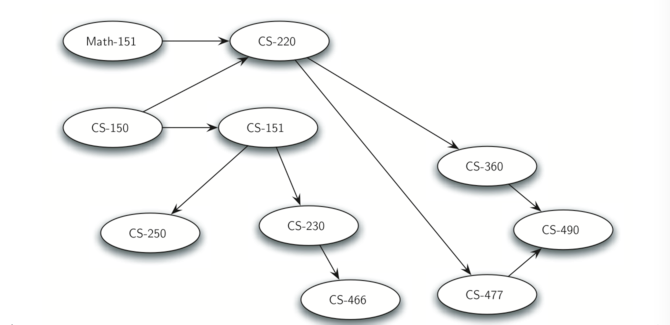
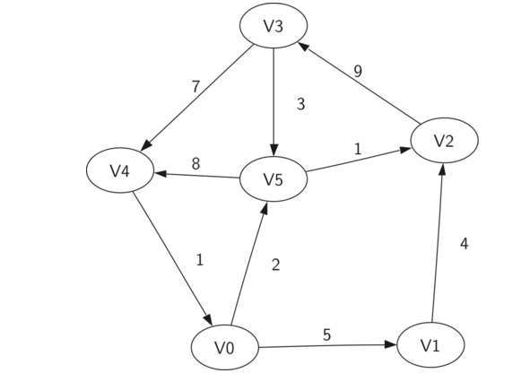
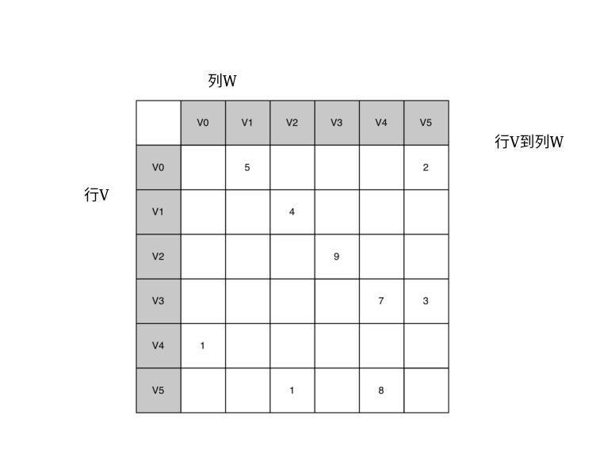
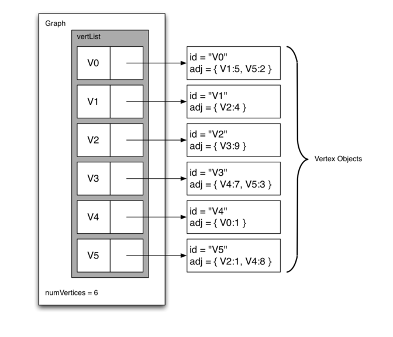

09-图_problem-solving-with-algorithms-and-data-structure-usingpython-中文
7.1.目标¶
- 了解图是什么，以及如何使用它。
- 使用多个内部表示来实现图抽象数据类型。
- 看看如何使用图来解决各种各样的问题
在本章中，我们将研究图。图是比我们在上一章中研究的树更通用的结构;实际上你可以认为树是一种特殊的图。图可以用来表示我们世界上许多有趣的事情，包括道路系统，从城市到城市的航空公司航班，互联网如何连接，甚至是完成计算机科学专业必须完成的课程顺序。我们将在本章中看到，一旦我们有一个问题的好的表示，我们可以使用一些标准图算法来解决，否则可能是一个非常困难的问题。
虽然人们相对容易看路线图并且理解不同地点之间的关系，但计算机没有这样的知识。然而，我们也可以将路线图视为图。当我们这样做时，我们可以让我们的计算机为我们做有趣的事情。如果你曾经使用过一个互联网地图网站，你知道一台计算机可以找到从一个地方到另一个地方最短，最快或最简单的路径。
作为计算机科学的学生，你可能想知道你必须学习的课程，以获得一个学位。图是表示学该课程之前的先决条件和其他相互依存关系的好方法。Figure 1 展示了另一个图。这个代表了在路德学院完成计算机科学专业的课程和顺序。

7.2.词汇和定义¶
现在我们已经看了一些图的示例，我们将更正式地定义图及其组件。我们已经从对树的讨论中知道了一些术语。
顶点 顶点（也称为“节点”）是图的基本部分。它可以有一个名称，我们将称为“键”。一个顶点也可能有额外的信息。我们将这个附加信息称为“有效载荷”。
边
边（也称为“弧”）是图的另一个基本部分。边连接两个顶点，以表明它们之间存在关系。边可以是单向的或双向的。如果图中的边都是单向的，我们称该图是有向图。上面显示的课程先决条件显然是一个图，因为你必须在其他课程之前学习一些课程。
权重 边可以被加权以示出从一个顶点到另一个顶点的成本。例如，在将一个城市连接到另一个城市的道路的图表中，边上的权重可以表示两个城市之间的距离。
利用这些定义，我们可以正式定义图。图可以由 G 表示，其中 G =(V,E)。对于图 G，V 是一组顶点，E 是一组边。每个边是一个元组 (v,w)，其中 w,v \in V。我们可以添加第三个组件到边元组来表示权重。子图 s 是边 e 和顶点 v 的集合，使得 e \subset E 和 v \subset V 。
Figure 2 展示了简单加权有向图的另一示例。正式地，我们可以将该图表示为六个顶点的集合：
和 9 条边的集合(每个元祖是顶点V到顶点W以及边的权重)

Figure 2
figure 2 中的示例图有助于说明两个其他关键图形术语：
路径 图中的路径是由边连接的顶点序列。形式上，我们将定义一个路径为 w_1, w_2, ..., w_n，使得(w_i, w_{i+1}) \in E, 当 1 \leq i \leq n-1。未加权路径长度是路径中的边的数目，具体是 n-1 。加权路径长度是路径中所有边的权重的总和。例如在 Figure 2中，从 V3 到 V1 的路径是顶点序列 (V3,V4,V0,V1)。边是 \{(v3,v4,7),(v4,v0,1),(v0,v1,5)\}。
循环(圈)
有向图中的循环(圈)是在同一顶点开始和结束的路径。例如，在 Figure 2中，路径(V5,V2,V3,V5)是一个循环。没有循环的图形称为非循环图形。没有循环的有向图称为有向无环图或 DAG 。我们将看到，如果问题可以表示为 DAG，我们可以解决几个重要的问题。
7.3.图抽象数据类型¶
图抽象数据类型（ADT）定义如下：
- Graph() 创建一个新的空图。
- addVertex(vert) 向图中添加一个顶点实例。
- addEdge(fromVert, toVert) 向连接两个顶点的图添加一个新的有向边。
- addEdge(fromVert, toVert, weight) 向连接两个顶点的图添加一个新的加权的有向边。
- getVertex(vertKey) 在图中找到名为
vertKey的顶点。 - getVertices() 返回图中所有顶点的列表。
- in 按照
vert in graph的语句形式，返回顶点是否存在图中。 如果存在则返回 True，否则返回False
有几种方法可以在 Python 实现图抽象数据结构（ ADT），需要在不同的应用中加以权衡。图的实现有两个著名的方法，邻接矩阵 adjacency matrix 和邻接表 adjacency list。我们将说明这两种不同的选择，并作为 Python 的类来实现邻接矩阵。
7.4.邻接矩阵¶
实现图的最简单的方法之一是使用二维矩阵。在该矩阵实现中，每个行和列表示图中的顶点。存储在行 v 和列 w 的交叉点处的单元中的值表示是否存在从顶点 v 到顶点 w 的边。 当两个顶点通过边连接时，我们说它们是相邻的。 Figure 3 展示了 Figure 2 中的图的邻接矩阵。单元格中的值表示从顶点 v 到顶点 w 的边的权重。

Figure 3
邻接矩阵的优点是简单，对于小图，很容易看到哪些节点连接到其他节点。 然而，注意矩阵中的大多数单元格是空的。 因为大多数单元格是空的，我们说这个矩阵是“稀疏的”。矩阵不是一种非常有效的方式来存储稀疏数据。 事实上，在Python中，你甚至要创建一个如 Figure 3所示的矩阵结构。
当边的数量大时，邻接矩阵是图的良好实现。但是什么是大？填充矩阵需要多少边？ 由于图中每个顶点有一行和一列，填充矩阵所需的边数为 |V|^2。 当每个顶点连接到每个其他顶点时，矩阵是满的。有几个真实的问题，接近这种连接。 我们在本章中讨论的问题都涉及稀疏连接的图。
7.5.邻接表¶
实现稀疏连接图的更空间高效的方法是使用邻接表。在邻接表实现中，我们保存Graph 对象中的所有顶点的主列表，然后图中的每个顶点对象维护连接到的其他顶点的列表。 在我们的顶点类的实现中，我们将使用字典而不是列表，其中字典键是顶点，值是权重。 Figure 4 展示了 Figure 2中的图的邻接列表示。  Figure 4
邻接表实现的优点是它允许我们紧凑地表示稀疏图。 邻接表还允许我们容易找到直接连接到特定顶点的所有链接。
7.6.实现¶
在 Python 中使用字典将使得邻接表的实现变得很容易。 在我们实现图表抽象数据类型时，我们可以创建两个类， Graph 和 Vertex（详见list1和list2）。 Graph 保存了包含所有**顶点**的主表，Vertex则描绘了图表中**顶点的信息**。每一个 Vertex 使用一个字典来记录顶点与顶点间的连接关系和每条连
接边的权重，这个字典被称作connectionTo（ self. connectionTo）。下面的列表1给出了 Vertex 类的代
码。构造函数（ __init___）简单地初始化了（一般为字符串的） id(顶点) 和 connectionTo 字典(该顶点到其它顶点的信息)(键是顶点,值是权重)。
addNeighbor 方法被用来添加从一个顶点到另一个顶点的连接。 getConnections 方法用以返回以
connectionTo 字典中的实例变量所表示的邻接表中的所有顶点。 getWeight 方法可以通过一个参数返回顶点与顶点之间的边的权重。
1 2 3 4 5 6 7 8 9 10 11 12 13 14 15 16 17 18 19 | class Vertex: def __init__(self,key): self.id = key self.connectedTo = {} def addNeighbor(self,nbr,weight=0): self.connectedTo[nbr] = weight def __str__(self): return str(self.id) + ' connectedTo: ' + str([x.id for x in self.connectedTo]) def getConnections(self): return self.connectedTo.keys() def getId(self): return self.id def getWeight(self,nbr): return self.connectedTo[nbr] |
Listing 1
下一个列表中显示的 Graph 类包含将顶点名称映射到顶点对象(上一个类创建的对象)的字典。在 Figure 4中，该字典对象由阴影灰色框表示。 Graph 还提供了将顶点添加到图并将一个顶点连接到另一个顶点的方法。getVertices 方法返回图中所有顶点的名称。此外，我们实现了 __iter__ 方法，以便轻松地遍历特定图中的所有顶点对象。 这两种方法允许通过名称或对象本身在图形中的顶点上进行迭代。
1 2 3 4 5 6 7 8 9 10 11 12 13 14 15 16 17 18 19 20 21 22 23 24 25 26 27 28 29 30 31 32 | class Graph: def __init__(self): self.vertList = {} self.numVertices = 0 def addVertex(self,key): self.numVertices = self.numVertices + 1 newVertex = Vertex(key) self.vertList[key] = newVertex return newVertex def getVertex(self,n): if n in self.vertList: return self.vertList[n] else: return None def __contains__(self,n): return n in self.vertList def addEdge(self,f,t,cost=0): if f not in self.vertList: nv = self.addVertex(f) if t not in self.vertList: nv = self.addVertex(t) self.vertList[f].addNeighbor(self.vertList[t], cost) def getVertices(self): return self.vertList.keys() def __iter__(self): return iter(self.vertList.values()) |
Listing 2
使用刚才定义的 Graph 和 Vertex 类，下面的 Python 会话创建 Figure 2中的图。首先我们创建 6 个编号为 0 到 5 的顶点。然后我们展示顶点字典。 注意，对于每个键 0 到 5，我们创建了一个顶点的实例。接下来，我们添加将顶点连接在一起的边。 最后，嵌套循环验证图中的每个边缘是否正确存储。 你应该在本会话结束时根据 Figure 2检查边列表的输出是否正确。
1 2 3 4 5 6 7 8 9 10 11 12 13 14 15 16 17 18 19 20 21 22 23 24 25 26 27 28 29 30 31 32 | >>> g = Graph() >>> for i in range(6): ... g.addVertex(i) >>> g.vertList {0: <adjGraph.Vertex instance at 0x41e18>, 1: <adjGraph.Vertex instance at 0x7f2b0>, 2: <adjGraph.Vertex instance at 0x7f288>, 3: <adjGraph.Vertex instance at 0x7f350>, 4: <adjGraph.Vertex instance at 0x7f328>, 5: <adjGraph.Vertex instance at 0x7f300>} >>> g.addEdge(0,1,5) >>> g.addEdge(0,5,2) >>> g.addEdge(1,2,4) >>> g.addEdge(2,3,9) >>> g.addEdge(3,4,7) >>> g.addEdge(3,5,3) >>> g.addEdge(4,0,1) >>> g.addEdge(5,4,8) >>> g.addEdge(5,2,1) >>> for v in g: ... for w in v.getConnections(): ... print("( %s , %s )" % (v.getId(), w.getId())) ... ( 0 , 5 ) ( 0 , 1 ) ( 1 , 2 ) ( 2 , 3 ) ( 3 , 4 ) ( 3 , 5 ) ( 4 , 0 ) ( 5 , 4 ) ( 5 , 2 ) |
Figure 2